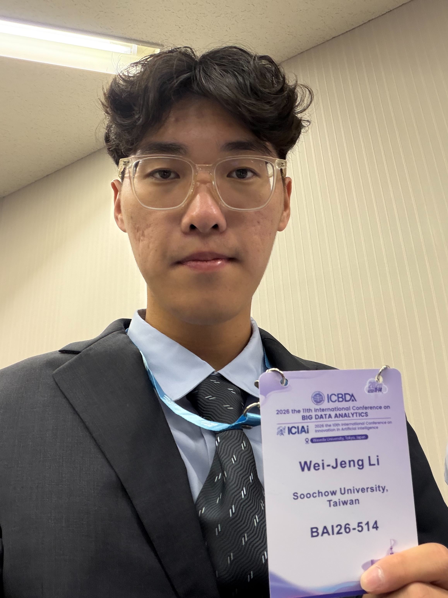

GEO 優化在處理什麼問題
我們會檢查網站是否清楚說明主題、服務和實際經驗， 也會處理頁面層級、內部連結及結構化資料。 目的不是堆關鍵字，而是減少搜尋系統理解內容時的缺口。
以下展示我們團隊對特定網站進行GEO優化後，成功讓施作網站超越大型網站被AI摘要收錄並引用。
畫面展示查詢關鍵字後，生成式搜尋整理出的 AI 摘要。 摘要內容引用了團隊施作的網站。
由於生成式語言模型的回應具有機率性， GEO 優化的目的就是提升內容被辨識、收錄與引用的機會。
我們從網站主題、內容架構、FAQ、內部連結與結構化資料著手， 協助新網站增加被搜尋引擎與生成式 AI 理解、收錄及引用的機會。
搜尋排名與 AI 引用會受到產業競爭、網站基礎和時間影響。 這項服務不承諾結果，重點是把網站該有的內容與技術基礎補齊。
新網站或內容規模較小的網站，常見問題不是完全沒有內容， 而是主題分散、頁面關係不清楚，搜尋系統很難判斷它能回答哪些問題。
我們會檢查網站是否清楚說明主題、服務和實際經驗， 也會處理頁面層級、內部連結及結構化資料。 目的不是堆關鍵字，而是減少搜尋系統理解內容時的缺口。
首頁、服務頁和文章各自處理什麼問題， 標題與段落應該讓人一看就能判斷。
頁面數量多不代表內容完整。對小型網站來說， 把服務流程、限制、案例和常見問題寫具體更重要。
相關頁面需要有合理的內部連結， 才能看出網站在特定地區、服務或問題上的內容範圍。
內容調整後要看索引、搜尋曝光和 AI 回答是否有變化， 再決定下一批要補充或修正的頁面。
會依網站現況、內容規模與主要目標安排調整方向。合作重點是讓網站定位更清楚、 內容更容易理解，並建立可持續觀察的基礎。
先確認網站目前的定位、內容狀態與主要問題，找出值得優先處理的方向。
讓服務、案例與重要內容有更清楚的呈現方式，降低訪客與搜尋系統理解網站的難度。
處理影響網站被發現、閱讀與長期維護的基礎問題，讓後續內容能穩定累積。
保留調整前後的資料與呈現紀錄，作為後續優化與內容更新的判斷依據。
小型網站很難在頁面數量和網域權重上正面競爭， 但可以選擇較明確的問題、地區或服務範圍，把答案寫得更完整。
不要一開始就涵蓋所有主題。先選定一群使用者、一項服務或一個地區，把常見問題回答清楚。
首頁負責說明定位，服務頁處理細節，FAQ 回答疑問，案例補上實際做法。這些頁面也要彼此連結。
實際流程、案例、紀錄和常見問題，比改寫網路上已經有的文章更能說明網站的差異。
過期資訊要修正，新問題要補上。搜尋曝光和 AI 回答的變化，也需要定期留下紀錄。
如果頁面無法爬取、缺少 sitemap，或網站層級混亂，再好的內容也可能很晚才被發現。
低權重網站通常不會因為一次修改就有明顯變化。持續補內容和觀察結果，才有資料決定下一步。
網站需要先檢查、再分批修改。上線後還要回頭看收錄和呈現結果， 否則很容易一直增加內容，卻沒有處理真正的問題。
確認網站主題、服務對象、現有頁面，以及目前最想改善的問題。
檢查內容分類、標題、內部連結、技術設定和已收錄頁面。
先處理影響範圍較大的項目，再逐步補頁面與 FAQ。
記錄索引、曝光、流量與 AI 回答，作為後續調整的依據。

我目前就讀資料科學系，研究 GEO、AEO 與生成式搜尋。 實作時，我會先把網站內容和技術問題分開檢查，再安排修改順序。
Search Console、GA4 和固定問題測試都是我會留下的紀錄。 這些資料未必能立刻證明成效，但可以看出頁面是否被收錄、 使用者從哪裡進站，以及生成式 AI 目前怎麼描述網站。
對低權重或剛上線的網站來說，優化通常要持續一段時間。 我會把重點放在內容是否完整、頁面是否能被讀取， 以及每次調整後留下了哪些可比較的變化。